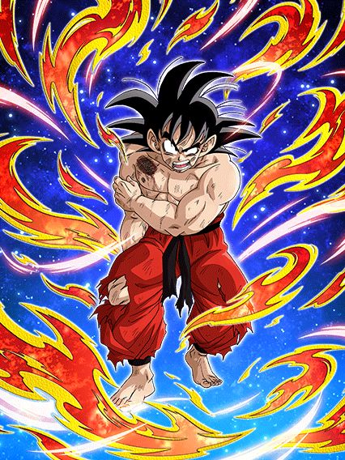
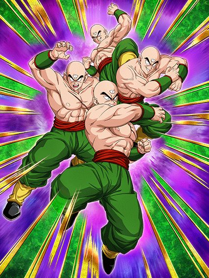
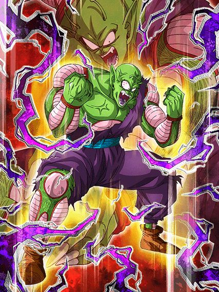
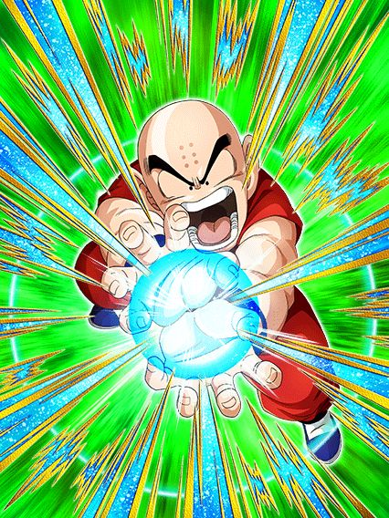
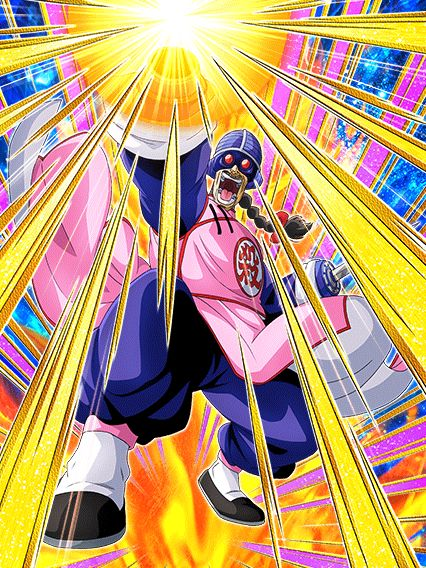
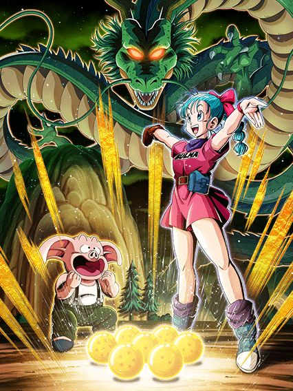

Essa foi diferenciada tá?
Quando revelaram numa producer letter do global q o tema da golden week era o 23° torneio de artes marciais, geral ficou muito doido, finalmente era hora de buffar o db clássico e dessa vez eles tinham q acertar em todos os cards
Bem, eles conseguiram.

Comparar esse card no turno 1 e depois no turno 3 é engraçado.
Bom, vamo lá né
Esse goku tá num nível meio fora do normal pra todos os outros dokkan fests
Pra começar ele tem uma intro, KI+2 e 101% de ATK e DEF sem nenhuma condição, ele só ativa por 5 turnos
Isso em cima dos KI+3 e 150% de ATK e DEF q ele já tem de base
Ele tmb fez algo meio engraçado no global, já q o yamcha veio com a categoria warriors raised on earth e era o único líder no jp, mas no global o goku veio logo depois do yamcha então ele perdeu ainda mais do valor.
E aí vem a grande mecânica do goku: Ele precisa tomar 10 ataques pra buildar mais 100% de ATK e DEF, e ele builda mais 100% de DEF tomando 5 ataques se a defesa dele estiver ativa
E pra auxiliar ele nisso, no turno 1 ele tem defesa ativa garantida e a partir daí 50% de chance de ativar de novo
Esse é o único ponto fraco do goku, ele builda rápido pra caramba mas tem q se lembrar q defesa bruta já não é mais o bastante pra tankar os bosses, então vc se baseia na pergunta “será que a defesa está ativa?”
Mas o rapaz não é apenas defesa, já q caso a defesa esteja ativa, ele lança um adicional com 70% de ser super e contanto q vc esteja contra 1 inimigo (oq não é difícil), o goku vai estar efetivo contra todos os tipos sempre
De cereja no bolo ele tem 50% de chance de nulificar supers de ki, e só deixando bem claro, essa nulificação tmb conta pra buildar a passiva do goku.
Ok ok, você fez de tudo, buildou e ainda sim tomou muito dano
Bom, hora de usar a standby do rapaz:

Caindo abaixo do clássico 59% de hp e depois de 6 turnos vc pode usar a standby (Obervação: esses 6 turnos são a partir da primeira aparição do goku, então se ele aparecer no turno 1 vai ser no 7, mas se for no turno 2 vc só vai poder no turno 8 e por aí vai)
E essa standby é do tipo revive-counter só q mais fácil q dos GT boys, vc pode só jogar o goku onde tiver mais ataques e morrer, bem simples
Vale mencionar q o goku não ataca mas dá 59% de ATK de suporte pra qualquer um e 100% de defesa caso seja warriors raised on earth e world tournament, e tmb tem scouter, então se vc quiser ainda dar um dano a mais antes de reviver, é interessante
Como o goku não stacka nem nada, ele não vai nukar o inimigo ou algo assim mas ele dá um dano decente.
E aí vem a parte mais engraçada desse card: o god-mode (batizado assim pelo grande datruth)
O goku fora da standby tem um pedaço da passiva especial onde caso ele ou outro personagem do time ative um revive, ele ganha 150% de ATK e DEF em cima de todo o resto da passiva dele, lança um super adicional garantido e fica com defesa ativa pra sempre
Caso vc tenha buildado ele todo antes de reviver, pós-revive ele fica praticamente invencível e começa a dar muito dano
E se vc usar alguns neurônios, já deve ter entendido oq é possível fazer
Caso vc use outro card q reviva e consiga reviver no começo da partida, quando o buff da intro do goku ainda tá ativa, ele vai acumular os 150% do revive com os 101% da intro e oq vc buildar tomando ataque, então além de dar um dano absurdamente alto com praticamente 3 supers de 10 milhões efetivo contra tudo, vc ainda fica sem se preocupar com a defesa já q ela vai estar sempre ativa enquanto vc tem 1 milhão e pouco de DEF
Um fato extra: Algumas pessoas usaram o metal cooler LR no time do goku sem leader skill pra reviver fácil e ativar o god-mode e varrer os eventos (eu diria q é uma estratégia válida).
Foi muito argumentado se o goku pós revive era o melhor card do jogo e realmente foi uma possibilidade.

Ele é muito bom... se der os adicionais
Esse cara é interessante mas muito situacional, já q ele lança 3 adicionais, cada um com 50% de chance de serem supers, e ele ganha 71% de ATK e DEF por super feito, ou seja, ele PRECISA desses adicionais, pq isso ajuda ele a sobreviver caso ele erre na 50% de chance de desvio q ele tem
Em geral se ele desviar, beleza, se ele não desviar e vc tiver azar nos supers, vc morre.
Bem simples e direto né..

O destruidor do world tournament, das red zones, dos ezas, das battle roads, no geral um monstro.
Grande piccolo jr. (ou Majunior), o raro buff extreme levemente insano e o líder secreto pra giant form q não tinha um 170% até hoje.
O piccolo é bem parecido com o cooler LR, focando bastante em dar vários supers e assim virar um tank, mas ele faz isso mais rápido e fácil
Ele precisa lançar 5 supers pra buildar 100% de ATK e DEF, e ele consegue fazer isso bem tranquilamente já q no turno 1 ele já consegue lançar 5 supers 💀
Ele tem a exata mesma intro q o goku, com 101% de ATK e DEF sem nenhuma condição, mas ao invés da defesa ativa o piccolo tem 50% de dar mais um super attack adicional, e falando de adicional..
Ele fica efetivo contra 1 inimigo apenas e tem 30% de chance de dar um super adicional
E tem uma mecânica de slot bem diferenciada mas q funciona bem, onde:
Se vc fez as contas certinho, o piccolo pode lançar 5 supers imediatamente e assim vc já fica buildado
E esses 100% em cima de uns 400k de defesa em 55% dão uma diferença legal, mas caso sua vida caia abaixo de 60% depois do turno 4..
")
A cereja no bolo q o piccolo precisava ter: uma forma gigante.
É uma forma gigante decente, ele sempre tá efetivo contra tudo e tem chance de critar, além de dar um dano legal, mas o grande negócio das formas gigantes é impedir o boss de dar supers ou aoes, então é só mais um extra pro piccolo
E agora é hora do god-mode do piccolo
Bom, depois de tudo já dito, o piccolo tmb tem uma active, e essa active é insana.
Não só ela é um aoe q builda ele de graça e ainda quebra 1 ataque de todos os inimigos, mas tmb pode ser ativada quando vc tiver menos de 50% de HP depois de 4 turnos OU a qualquer hora caso tenha mais de um inimigo, então a ativa praticamente destrói battle roads e faz do piccolo o card n.1 pro world tournament, mas ela faz mais uma coisa
Os buffs de slot do piccolo ativam quando ele atacar, e a active dele é um ataque, então agora ele acumula os 100% de ATK e DEF e o adicional do slot 2 com os outros 160% do slot 1, oq faz ele lançar 5 supers, todos com um dano absurdo e aumentando ainda mais a defesa dele q já é muito alta.
O piccolo foi considerado o melhor TUR do jogo quando lançou e continua no top 3.

Oq mais eu posso pedir de um personagem?
Esse cara é praticamente a segunda vinda do Piccolo STR, o cara é um suporte tank que consegue se segurar sozinho contra os bosses
O cara dá 40% de suporte enquanto linka super bem com o goku descalço, ganha um buff q dura 4 turnos levando só 1 ataque, tem 40% de redução de dano q é 60% antes de ele atacar, tem 50% de chance de critar.. sabe.. fica difícil reclamar desse cara
Lógico, ele n é invencível ou coisa assim, mas uma buildzinha de desvio nele.. rapaz..

Ah sim, o personagem impossível de zuarem.
Geral achou que esse cara ia ganhar eza na celebração do super hero mas não foi o caso, ao invés disso foi aqui e a espera valeu a pena, ele é insano
Esse cara é genial, pra começo de conversa ele tem scouter permanente incondicional, isso já coloca ele num nível acima do resto, junta isso com o stack de DEF dele, curar vida, e o fato de ele linkar bem com o LR mais insano de todos, simplesmente absurdo
A simples existência do Piccolo laranja e Piccolo STR agora fazem a condição da active desse cara muito fácil de usar, já q ele precisa de um namekuseijin no time, é perfeito.

KKKKKKKKK O BALANCEAMENTO NÃO EXISTE
Esse cara simplesmente tem 40% de redução de dano com a defesa q ele stackou antes de transformar, além de stats muito bons, os supers dele dão um dano muito bom e tem 40% de chance de critar
Isso ainda mantendo a cura e o scouter, sabe.. como é justo?
De novo, era impossível zuarem esse card, ele já tinha coisas fortes demais antes do eza e ele estar assim é a prova disso.

Pelo bem da celebração, alguém tinha q levar o tiro..
E foi esse cara.
Ele é bem auto explicativo, 70% de chance de ter 100% de ATK e DEF, preciso falar mais?
Ok, eu posso falar que ele ganha mais incríveis 50% de ATK e DEF contra um inimigo turtle school
Pronto, eu não vou falar mais nada não

Enfim assistiram o tutorial de como cozinhar.
Eu diria que o jogador médio de dokkan (incluindo eu) não compreende o quanto a bulma faz diferença em qualquer time até realmente ter ela, ou eu só sou estúpido mesmo.
A bulma literalmente se tornou o melhor card do jogo por ela ser a faz-tudo que faz tudo super bem, eu não consigo entender como alguém pensou em transformar uma suporte insana em uma tank E uma nuker também
A bulma é meio similar ao gokuzinho phy, pegue 7 orbs, assim ela vai ter um ATK e DEF extra bons por ser nuker, vai dar um adicional garantido oq é muito bom já q ela aumenta DEF e chance de crítico em 50% em ambos supers, e vai ativar o suporte absurdo de 3 de ki e 37% de ATK e DEF pra todo mundo por 2 turnos
Esse é facilmente o ponto mais forte da bulma, é o suporte que dura mais de um turno e q é muito alto, além de não ter restrição nenhuma além dos orbs
A bulma literalmente facilita a vida dos LRs do oitavo aniversário, e consegue fazer até o fraudehan ter ki, isso q eu chamo de potência.
Falando sobre a defesa dela, além dos orbs e tals, ela tem defesa ativa por 7 turnos e a cada turno ela ganha 7% de redução de dano (isso chega até 77% mas vc nunca vai ver pq a luta vai acabar antes), além de ela ser orb changer então pegar orbs não é difícil e vc cura bastante vida se pegar orbs str.
E aí vem a cereja do bolo, a active skill.

A bulma finaliza o status de melhor card do jogo tendo a ativa mais absurda de quebrada do jogo inteiro, já que agora ela adiciona mais 17% no 37% de suporte dela E deixa os aliados efetivos contra todos os tipos no turno
Eu não sei o quão absurdo isso pode parecer mas deixar as genki damas dos LRs do oitavo aniversário ou o kamehameha mais fraco do gohan agl (45 milhões xd) efetivos contra tudo literalmente destrói o jogo já q a maior fraqueza desses ataques é exatamente não critar e não dar dano o bastante, com isso, não importa mais
E é claro q eu tinha q deixar pro final o fato da bulma mudar todos TODOS os 23 orbs no campo pra str de graça, o que obviamente te dá o suporte, DEF e ATK máximos e simplesmente deixa ela no 100% de potência.
Eu acho q ficou bem óbvio o pq da bulma ser o melhor card do jogo, ela literalmente não tem falhas e o suporte dela muda a forma q vc usa alguns times, e claro, ela nem precisa de cópia pra ser boa assim.
O dokkan com certeza não vai mandar outro suporte assim pro jogo por um bom tempo, mas não é como se a bulma fosse envelhecer mesmo..
")
Eu quando mais uma bulma muito decente:
Essa bulma literalmente ficou muito tempo sem eza mas o dela ficou muito bom, já que ela virou uma tank muito insana
Em resumo a bulma cura vida com rainbow orb, e a passiva dela só tem isso, meio óbvio q ela não dá dano
O grande diferencial dela é ela ter 70% de chance de ter 77% de redução de dano, q é só um pouquinho alta demais e torna ela invencível contra quase tudo no jogo
E a melhor parte é q caso os 70% ativem, eles ficam até o fim do turno, mas caso não ativem, o jogo vai jogar a moeda do 70% a cada ataque q vc levar até uma hora ativar, algo q é bem quebrado considerando que ela é uma tank
No geral um card bem usável pra uma f2p e boa pra caramba, só tem q tomar cuidado com os 70%, dependendo da luta 1 golpe é o bastante pra te matar antes da redução de dano ativar.

Mais uma vez a golden week cozinha.
Esse cara não ironicamente serve como um substituto perfeito pro Kuririn STR se vc não tiver, e se tiver, melhor ainda então
Esse cara é um suporte de 50% de ATK e DEF pra TEQ e INT, já começa por aí, ajudando o goku do torneio
Por sinal ele linka legal com ele, e funciona perfeitamente, já q esse cara tem defesa ativa e mais defesa caso tenha um aliado turtle school no time (uau, que coincidência)
Como se não bastasse, ele ainda tem dano bom e builda crítico atacando, que personagem genial
90% dos cards da golden week são incríveis, os buffs q DB saga receberam foram insanos demais slk

MAIS UM, OS CARAS NÃO ERRAM.
Esse cara é absurdo, ele precisa de peppy gals no time mas o time DB Saga tem 3 bulmas diferentes pra usar, não tem desculpa
Buffs esses que incluem 50% de suporte pra TODOS super class, defesa ativa, +150% de DEF q torna o Yamcha um tank muito decente, e um adicional com 70% de chance de ser super
Parte disso só vem após o turno 5, mas tudo certo, a parte defensiva tá sempre ali então tá ótimo, card incrível e foi meio inesperado o quão bom ele ficou, pq ele ficou muito bom
Infelizmente.. foi o último buff desse ano pro time, mas o time continua competitivo slk
Você chegou ao fim dessa página!
Obrigado por ler tudo, e fica a vontade pra ver outras